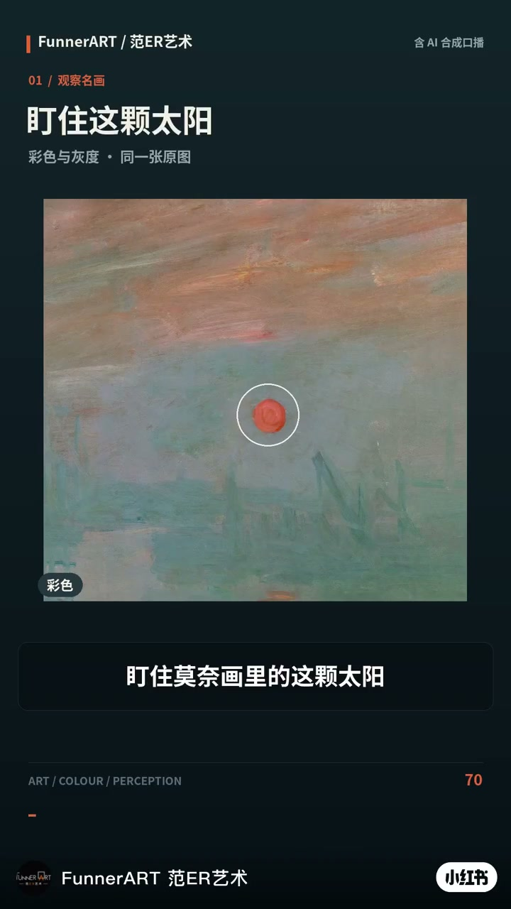
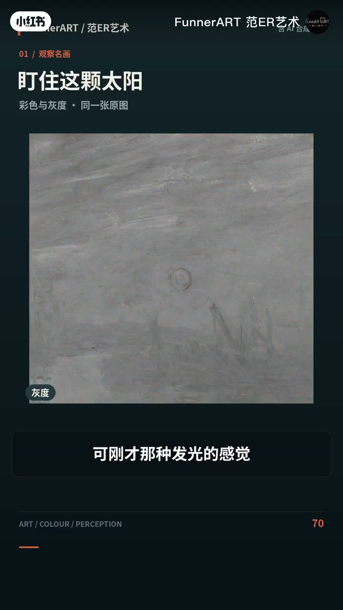
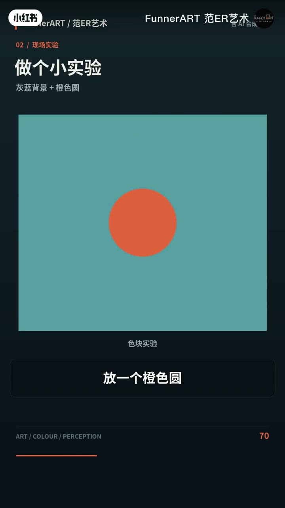
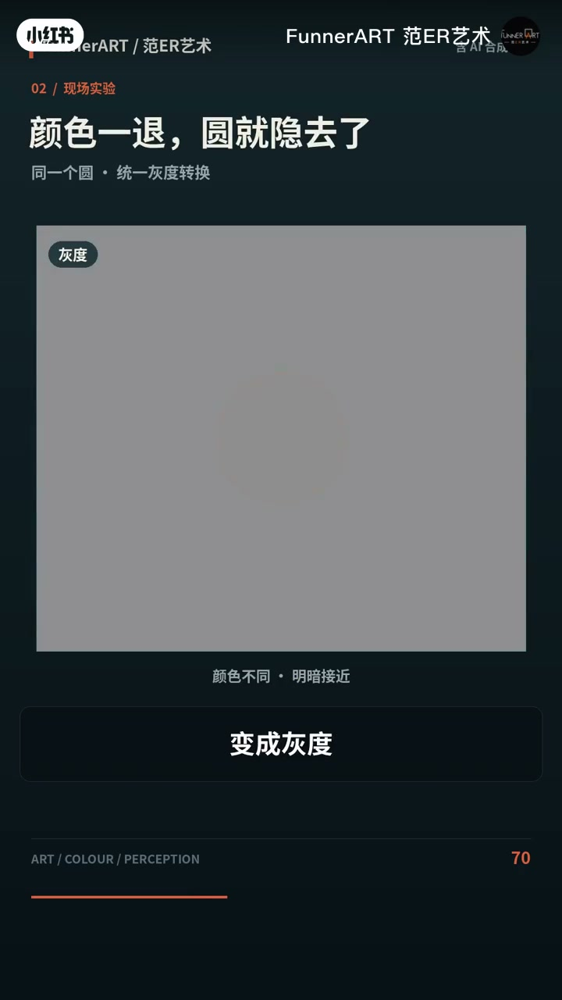
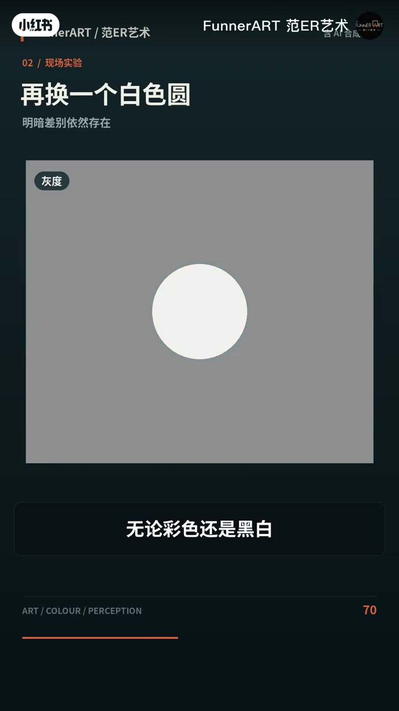
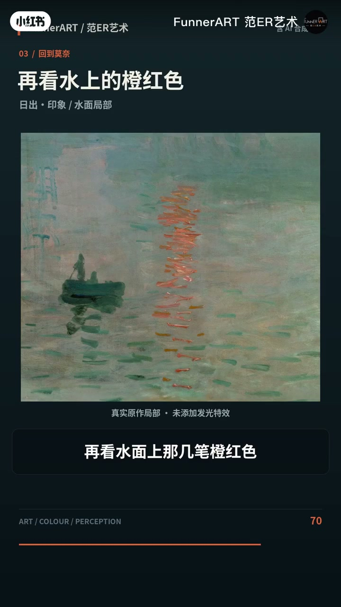

内容要点
一条约两分钟的视觉实验短片：先去色验证「发光感」来自哪里，再用橙圆/白圆对照区分两种跳脱方式，最后把结论落回莫奈的颜色安排。
知识结构
去掉整幅颜色后太阳仍在，发光感却消失；单看明暗，太阳与天空其实非常接近，突出的是颜色。
明暗接近时，橙圆靠颜色差显眼、灰度后隐去；白圆靠明暗差，彩色与黑白都显眼。
太阳从灰蓝雾气里靠颜色跳出，明暗却未与天空彻底拉开，所以既醒目又朦胧闪烁。
几笔橙红把晨光带进冷水面；莫奈没装「灯」，是安排颜色关系——周围色也能把主体衬亮。
「看起来发光」不等于「画得更亮」；颜色对比与明暗对比是两件事，莫奈用前者让太阳升起来。
图文实录
盯住太阳：一去色，发光感就弱了
开场让观众盯住画中那颗太阳，再把同一张原图转成黑白。太阳的位置还在，可「刚才那种发光的感觉」不见了。作者强调：他们没有单独调暗太阳，只是把整幅画的颜色去掉了。点名作品是莫奈的《日出·印象》——那颗橙红色的太阳，看起来像要穿透海港的沉雾。
有意思的是，单看明暗，它跟周围的天空其实非常接近。你觉得它亮，很大程度上是因为颜色特别突出。视频把这两件事拆开：平时很容易把「颜色跳」和「明暗跳」混为一谈。


小实验：橙色圆会隐，白色圆不会
在灰蓝色背景上放一个橙色圆，把双方明暗调到接近，只留下颜色差别。彩色时你能清楚看见这个圆；变成灰度，它就很难分辨。再换成白色圆：无论彩色还是黑白，都很显眼。
「白色圆靠明暗差别跳出来；橙色圆则可以靠颜色差别跳出来。」
这一对照直接服务后面的莫奈解读：太阳可以「靠颜色差」醒目，而不必靠「更亮的白斑」。



回看莫奈：既醒目，又像融在雾里
如果只想让太阳显眼，涂一块白色就行。可这颗太阳更特别：颜色从灰蓝色的雾气里跳出来，明暗却没有跟天空彻底拉开。于是它既醒目，又像融在雾里，有一种朦胧、闪烁的感觉。
口播提到哈佛的视觉研究者曾用这幅画解释我们怎样看见颜色和明暗，并立刻划清边界：这不等于莫奈当年就懂神经科学。画家是反复观察、试色，先在画布上找到效果；后来科学家才研究「它是怎么回事」——视频未出示具体论文，此处按作者陈述记录。
水面橙红，与「用颜色关系画光」
再看水面上那几笔橙红色：它们把太阳的颜色带进海港，让冷冷的水面也有了晨光。莫奈没有给画布装上一盏灯，只是安排了颜色之间的关系，就让人觉得太阳真的升起来了。

「画出光，不一定要把颜料画得更亮，还可以让周围的颜色把它衬亮。」
成片收在这句行动结论上：光感可以是关系，而不只是局部提亮。